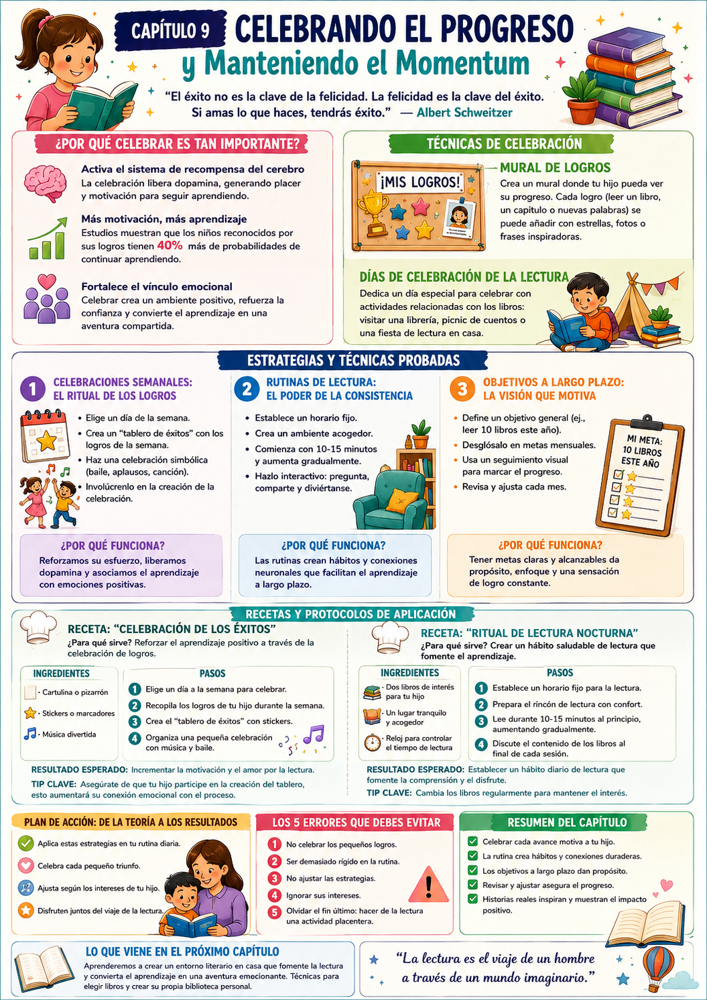

Tu hijo sostiene un libro, sus ojos brillan mientras descifra las palabras en voz alta. Esa escena es el resultado de semanas de esfuerzo — tuyo y de él. Pero si no celebrás ese momento, corrés el riesgo de que pierda la chispa que lo llevó hasta ahí.
Celebrar el progreso no es un lujo — es una estrategia. Cada pequeño avance reconocido es un ladrillo más en la confianza de tu hijo como lector. Y esa confianza es lo que lo va a llevar a seguir leyendo cuando ya no estés ahí para empujarlo.
Celebrar cada avance
No solo los grandes logros. Cada palabra nueva, cada página terminada, cada libro cerrado merece su reconocimiento.
Mantener la rutina
La consistencia es la clave. Una rutina lectora flexible pero sostenida construye el hábito que dura toda la vida.
Metas a largo plazo
Tener un objetivo claro — "quiero leer 10 libros este año" — le da propósito y dirección al esfuerzo diario.
Lo que dice la neurociencia
Cuando celebramos un logro, el cerebro libera dopamina — el neurotransmisor del placer y la motivación. Los chicos que reciben reconocimiento por sus logros tienen un 40% más de probabilidades de continuar aprendiendo. Celebrar no es un capricho — es activar el sistema de recompensa del cerebro a favor del aprendizaje.
✅ Antes de arrancar este capítulo

Tuki te dice:
Celebrá el esfuerzo y cada pequeño logro. Enséñale a ver los desafíos como oportunidades para crecer. La motivación y la confianza no son magia — son práctica diaria, amor y paciencia.
Antes de ver las estrategias concretas, entendamos por qué celebrar tiene tanto impacto — y cómo la rutina y las metas a largo plazo se conectan con el momentum lector.
El ciclo de la celebración
Dopamina, motivación y aprendizaje
Cuando celebrás un logro de tu hijo, no es solo una muestra de afecto — es una intervención neurológica. La dopamina que se libera crea una asociación positiva entre el esfuerzo y el placer.
El ciclo funciona así: celebrás → él se siente bien → asocia la lectura con emociones positivas → quiere repetir la experiencia → mejora más → hay más para celebrar. El momentum se construye solo una vez que arranca.
El riesgo de no celebrar
Si los logros no se reconocen, el chico puede empezar a sentir que su esfuerzo no vale la pena. Eso no es solo desmotivación — es el inicio de la evitación lectora.
El poder de la rutina
Hábitos que se sostienen solos
Las rutinas consolidan hábitos — y los hábitos son la base del aprendizaje sostenible. Un horario fijo de lectura crea una expectativa positiva: el chico espera ese momento porque lo asocia con algo agradable.
- 1Empezá con sesiones cortas: 10-15 minutos son suficientes al principio.
- 2Elegí un momento del día libre de distracciones — antes de dormir o después de la cena suelen funcionar bien.
- 3Hacélo interactivo: preguntas, predicciones, conversaciones sobre la historia.
- 4Sé flexible: si un día no pueden leer, no pasa nada. Lo importante es la constancia a largo plazo.
Metas a largo plazo
La visión que motiva el esfuerzo diario
Un objetivo claro le da propósito al esfuerzo diario. "Quiero leer 10 libros este año" convierte cada libro en un paso visible hacia algo más grande. Eso es mucho más motivador que leer "porque sí".
- 1Definí el objetivo juntos — que él lo proponga o al menos lo elija.
- 2Desglosalo en metas mensuales: si la meta es 10 libros al año, es 1 libro por mes.
- 3Creá un seguimiento visual — un gráfico, un mapa, una lista que pueda marcar.
- 4Revisá juntos cada mes: ¿llegaron a la meta? ¿Qué ajustan para el próximo?
Ejemplo concreto
Al final de cada mes, revisan cuántos libros leyeron y qué les gustaría leer el próximo. Esa revisión es una celebración en sí misma — y una oportunidad de planificar juntos el siguiente tramo del viaje.
Tuki te dice:
La rutina crea hábitos, los hábitos crean lectores, y los lectores crean su propio futuro. Cada noche de lectura es una inversión que rinde para siempre.
Tres estrategias concretas para celebrar el progreso y mantener el momentum — celebraciones semanales, rutina de lectura y metas a largo plazo.
Viernes de Logros — el ritual semanal
Un día fijo para reconocer y celebrar
Elegí un día fijo de la semana para celebrar los logros lectores. No tiene que ser grande ni costoso — lo que importa es que sea consistente y que el chico lo espere con ganas.
- 1Elegí el día — puede ser el viernes, el sábado, lo que mejor encaje con su rutina.
- 2Creá un "tablero de éxitos": cartulina o pizarrón donde agreguen stickers, dibujos o notas con los logros de la semana — palabras aprendidas, libros terminados, hitos alcanzados.
- 3Hacé una celebración simbólica: un baile, una canción favorita, la comida que más le gusta. Que sea un momento especial.
- 4Involucralo en la creación: preguntale qué quiere hacer para celebrar. Eso le da control y multiplica el entusiasmo.
Ejemplo concreto
Si aprendió 5 palabras nuevas en la semana, el Viernes de Logros puede incluir su comida favorita y un baile improvisado. Ridículo, divertido y poderoso — así se crean los recuerdos asociados a la lectura.
Rutina de lectura nocturna
El ritual que más dura · Consistencia ante todo
La rutina nocturna de lectura es una de las tradiciones más poderosas que podés instalar. Calma, conecta y abre mundos — todo al mismo tiempo.
- 1Elegí un horario fijo — idealmente antes de dormir, en un ambiente tranquilo y sin pantallas.
- 2Preparà el rincón: cojines, luz suave, los libros a mano.
- 3Empezá con 10-15 minutos y aumentá gradualmente a medida que se engancha.
- 4Al terminar: "¿qué fue lo que más te gustó?" — ese intercambio es tan valioso como la lectura misma.
Tip de consistencia
Cambiá los libros regularmente para mantener el interés. Que él elija el libro de vez en cuando — eso aumenta enormemente su compromiso con el momento de lectura.
Mural de logros lectores
Visualizar el camino recorrido
Un mural visible del progreso no solo motiva al chico — también celebra el esfuerzo frente a toda la familia. Ver cuánto avanzó es uno de los motivadores más poderosos que existen.
- 1Conseguí una cartulina grande o usá una pared con papel afiche.
- 2Por cada libro terminado, agregan la portada, un dibujo del personaje favorito o una frase corta con lo que más les gustó.
- 3Decoren el mural juntos — que sea un proyecto compartido, no solo un registro.
- 4Al llegar a hitos (5, 10, 20 libros), hacen una celebración especial.
Tuki te dice:
Cada avance merece ser reconocido. La consistencia y el amor son el mejor regalo que podés darle a tu hijo para que se convierta en un lector seguro, motivado y feliz.
Dos ejercicios para aplicar esta semana más las dos recetas del capítulo. Todo con materiales simples y tiempo acotado.
🎊 Fiesta de Lectura
¿Para qué sirve? Crear un recuerdo positivo y emocional asociado a la lectura — el tipo de recuerdo que dura toda la vida.
- 1Elegí un momento libre de interrupciones — puede ser un sábado a la tarde.
- 2Preparà un espacio cómodo y decorado — dibujos de él, globos, lo que tengas. Que se sienta especial.
- 3Elegí juntos los libros — uno que ya leyó y quiera releer, y uno nuevo que quiera explorar.
- 4Mientras leen, hacé pausas para conversar sobre la historia y ofrecé snacks como pequeñas recompensas por cada capítulo o página.
Resultado: Un recuerdo positivo y motivador asociado a la lectura — exactamente lo que construye el amor por los libros a largo plazo.
🗺️ Mapa de Progreso Lector
¿Para qué sirve? Visualizar el progreso de forma concreta y motivadora — que él pueda VER cuánto avanzó.
- 1En la parte superior escribí "¡Mi Aventura de Lectura!" — que él dibuje algo que represente su amor por los libros.
- 2Dibujá un camino o ruta a lo largo de la cartulina — cada parada es un libro leído.
- 3Por cada libro completado, agregán una estrella o sticker en la parada correspondiente.
- 4Colgalo en un lugar visible — que lo vea todos los días.
Resultado: Una visualización clara del progreso que lo motiva a continuar llenando el mapa.
⭐ Celebración de los Éxitos
¿Para qué sirve? Reforzar el aprendizaje positivo a través de un ritual semanal de celebración.
- 1Elegí un día fijo de la semana para celebrar.
- 2Recopilá los logros de la semana — palabras aprendidas, libros terminados, hitos alcanzados.
- 3Completá el tablero de éxitos con stickers y anotaciones.
- 4Celebración: música, baile, lo que él elija.
Resultado: Más motivación y amor por la lectura — el aprendizaje asociado a emociones positivas.
🌙 Ritual de Lectura Nocturna
¿Para qué sirve? Crear un hábito saludable de lectura que fomente el aprendizaje sostenido.
- 1Establecé un horario fijo — antes de dormir es ideal.
- 2Preparà el rincón con confort: cojines, luz suave, sin pantallas.
- 3Leé 10-15 minutos al principio, aumentando gradualmente.
- 4Al terminar, discutí brevemente el contenido — que sea una conversación, no un interrogatorio.
Resultado: Un hábito diario de lectura que fomenta la comprensión y el disfrute.
- 1No celebrar los logros pequeños: enfocarse solo en metas grandes hace que el chico sienta que nunca llega. Cada pequeño paso merece su reconocimiento.
- 2Ser demasiado rígida con la rutina: la flexibilidad es clave. Si un día no pueden leer, no pasa nada — lo importante es la consistencia a largo plazo.
- 3No ajustar las estrategias: lo que funciona para un chico puede no funcionar para otro. Observá, escuchá y ajustá según lo que veas que lo engancha.
- 4Ignorar sus intereses: forzarlo a leer libros que no le gustan apaga la motivación. Sus preferencias son la brújula — seguílas.
- 5Perder de vista el objetivo final: enseñar a leer es importante, pero el objetivo real es que ame leer. La diversión y el placer son parte del aprendizaje, no extras.
Tuki te dice:
¡Terminaste el Cap 9! Solo falta el último — el Cap 10, donde vemos cómo transformar la lectura en un viaje familiar que une y enriquece a toda la familia.
Esta infografía resume las estrategias de celebración y momentum del capítulo. Guardala como recordatorio de que cada avance merece ser festejado.

Infografía · Capítulo 9 — Celebrando el Progreso y Manteniendo el Momentum
Tuki te dice:
¡Ya casi llegás! En el Cap 10, el último, vemos cómo hacer de la lectura un viaje familiar que une y transforma a toda la familia.